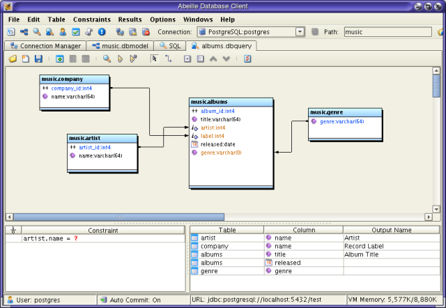

Query Builder
The Query Builder
allows you to graphically create SQL commands for querying data. The
main purpose of this tool is to allow developers to easily explore and
examine the data in their database.

| Saves the query to a file. |
|
| Adds a new table to the top pane. | |
| Invokes the form view for the selected table. This is here if you need to inspect data for selected tables as you build the query | |
| Performs a query (select *) on the selected table and displays the results. | |
| Generates the SQL from the parameters in the builder and pastes the result in the SQL editor. | |
| Executes the generated SQL. |
|
| The Mouse and Link Tools are mutually exclusive. If the mouse tool is selected, you can select, move, and resize a table. | |
| If the link tool is selected, you can drag links between columns of different tables. Existing links can be removed by dragging the link off of one of the tables. New links can be created by dragging the column of the source table to a column in the destination table. Links define the natural joins for the query. | |
| Adds a new constraint. You can also create a new constraint by dragging a column from a table in the top pane. Note that the mouse tool must be selected in this case. | |
| Adds a new result column. You can also create a result column by dragging a column from a table in the top pane. | |
| Moves the selected constraint or result column up in the list. | |
| Moves the selected constraint or result column down in the list. |
The builder is divided into three panes. The top pane displays the set of tables that you wish to pull data from. Additionally, this view displays the links between the tables used to form the joins. All joins are natural joins. The Query Builder does not support any type of join other than natural joins. If you wish to use advanced SQL constructs such as outer joins, you must use the SQL editor.
The lower pane contains the constraints and result columns for the query. You can drag and drop columns from the tables in the top pane into these views. The constraint view accepts constraints in the following form:
| table.column op value | ||
| where: | table is the table name | |
| column is the column name | ||
| op is the constraint (>,<,=, etc. ) | ||
| value is the value for the constraint. This can either be a string literal or numeric value. However, you may supply a ? here. In this case, the SQL buffer will prompt you for a value when the SQL is executed. |
The query builder will allow you to type anything in the constraint view. However, if the constraint does not follow the above format, you should manually include the constraint in the reportables view. The reason is because if Abeille is unable to parse your constraints, it will not be able to determine the tables for those constraints (and the joins might not be correctly determined).
When generating the SQL for a query, Abeille uses the minimum number of tables possible. For example, if you have 10 tables in the model view, but use only 2 of those tables as reportables and constraints, Abeille may or may not include the other 8 tables. It depends entirely on the relationships between the tables.The reason for this is because we want you to be able to see all of the relationships, but still be able to zero in and query on a particular relationship in the graph. For complicated models it may be necessary to manually exclude tables from the SQL generation. Simply select the table and hit the CTRL-E key. To include an excluded table, select the table and press the i key.
The reportable column view displays all columns that will be returned from the query. This is the list of columns that you would place after the select statement as follows:
select column1, column2, ..., columnN from table where ...
There are currently no formatting options for reportables.